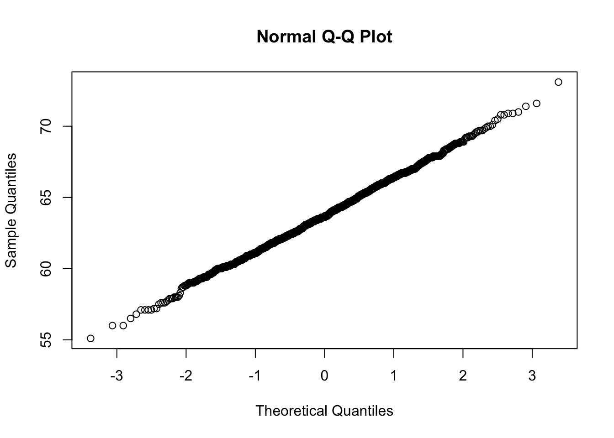

Lecture 8 Normal Mean
The following notes, mostly transcribed from Neath(0512,2021) lecture, summarize sections(5.1 and 5.2) of Hoff(2009).
Where we been? where we going? Binomial model? check! Poisson model? check! Normal model? Next!
Unlike Binomial and Poisson which are for discrete data, the normal distribution is a continuous distribution. It is completely characterized by the mean and standard deviation. Our notation will be mean \(= \mu = \theta\), standard deviation \(= \sigma\), variance \(= \sigma^2\).
Normal distribution calculations are easy to do in R use
- for density values
- for cdf-values; \(Pr(Y \le y | \theta, \sigma^2) = \texttt{pnorm}(y, \texttt{mean}=\theta, \texttt{sd} =\sqrt{\sigma^2} )\)
# Reproduce Figure 5.1 of Hoff (2009)
y <- seq(0, 10, .05)
plot(y, dnorm(y, mean=2, sd=.5), type="l", lty=1, lwd=2,
col="black", xlab="y", ylab="p(y|theta, sigma2)");abline(h=0)
lines(y, dnorm(y, mean=5, sd=2), lty=2, lwd=2, col="red")
lines(y, dnorm(y, mean=7, sd=1), lty=3, lwd=2, col="blue")
legend("topright", inset=.05, col=c("black", "red", "blue"),
lwd=2, lty=c(1,2,3), legend=legend)Figure 8.1: Some normal densities.
A justification for the frequency with which the normal distribution is encountered in real-world applications is that any variable that is itself a sum or an average of a whole bunch of other variables (not necessarily observable quantities) will be well approximated by a normal distribution that’s because of the Central Limit Theorem. In practice, this means that the normal sampling model will be appropriate for data that result from the additive effects of a large number of factors.
8.1 Example: women’s height
1893 through 1989 (end of 19th century) women’s heights in inches in England.
library(alr4)
y <- Heights$dheight
c(mean(y), sd(y))## [1] 63.751055 2.600053You don’t need to have an argument like 05a slide 7 at the ready to justify using a normal distribution. If you have enough observations plot the data and see! If the histogram looks like a bell curve or even better if the “normal probability plot” or the so-called QQ-plot which stands for quantile-quantile resembles a straight line then a normal model is appropriate.
yvals <- seq(min(y)*0.95, max(y)*1.05, length=100)
hist(y, freq=F, right=F, breaks=20, xlab="Height in inches",
ylab="", main="", col="gray")
lines(density(y), lty = 2, lwd=2, col = "red")
lines(yvals, dnorm(yvals, mean(y), sd(y)), lwd=2)
legend("topright", legend=c("population","sample"), col=c(1,"red"), lwd=2, lty=c(1,2), bty="n")Figure 8.2: Height data and a normal density
qqnorm(y)
8.2 Inference for the mean, conditional on the variance
Our interest in this course is; How do you do Bayesian inference about the mean \(\theta\) and the variance \(\sigma^2\) in a normal model. \[ p(y_1,...,y_n|\theta, \sigma^2)=\left(2 \pi \sigma^{2}\right)^{-n / 2} \exp \left\{-\frac{1}{2} \sum\left(\frac{{y_{i}-\theta}}{\sigma}\right)^{2}\right\} \]
From this we can see a two-dimensional sufficient statistic. Because the density only depends on the data set through \(\sum y_i\) and \(\sum y_i^2\). That means \(\sum y_i\) and \(\sum y_i^2\) are a sufficient statistic and since there exists a one to one mapping between these two statistics and \((\bar y, s^2)\) that means \((\bar y, s^2)\) is a sufficient statistic. \[\bar y=\frac{1}{n}\sum y_i ~; \quad s^2=\frac{1}{n-1}\sum(y_i-\bar y)^2\] This is a feature of the normal distribution. We will take the problem of inference about \((\bar y, s^2)\) and break it into two pieces.
How will we do that? We will write
\(p(\theta , \sigma^2 | y_1, …, y_n)= p(\theta | \sigma^2, y_1, …, y_n) \times p( \sigma^2 | y_1, …, y_n).\)
Today we will only work on the first one; that is “inference about the mean of a normal distribution assuming the variance is known” or equivalently “inference about the normal mean conditional on the variance.”
\[ p(y_1,...,y_n|\theta,\sigma^2) = c\times e^{-\frac{1}{2\sigma^2}\sum (y_i - \theta)^2} \propto e^{c_1(\theta - c_2)^2} \]
The “likelihood” as a function of \(\theta\) is \(e^{\text{quadratic in }\theta}.\) So the conjugate prior \(p(\theta|\sigma^2)\) will be a distribution whose density consists of \(e^{\text{quadratic in }\theta}\). What probability distribution has a density that is \(e^{\text{quadratic thing }}?\) The normal distribution! We have just proven the conjugate prior for the mean in a normal sampling model is the normal distribution.
Suppose \(\theta \sim \text{Normal}( \mu_0, \tau_0^2 ),\) where \(\tau_0^2\) is the prior variance, \(\{Y_1, …, Y_n | \theta\}\sim\text{iid Normal}( \theta, \sigma^2)\) (where \(\sigma^2\) is known) then \(\{\theta | y_1, …., y_n\} \sim \text{Normal}\) because it’s a conjugate prior. i.e.,
\[ p(\theta | y_1, …, y_n, \sigma^2) \propto \exp\bigg\{ -\frac{1}{2} \bigg( \frac{\theta-b/a}{1/\sqrt{a}}\bigg)^2 \bigg\} \]
where \(a = (1/\tau_0^2)+(n/\sigma^2) \text{ and } b = (\mu_0/\tau_0^2)+(\sum y_i/\sigma^2).\) Thus \(p(\theta | y, \sigma^2)\) has the same shape as a normal density with mean of \(b/a\) and a standard deviation of \(1/\sqrt a\) therefore \(\{\theta | y, \sigma^2\}\) is normally distributed with mean \(= b/a\) and sd \(= 1/\sqrt a.\) So we have \(\{\theta | y_1, …, y_n , \sigma^2\} \sim \text{ Normal}(\mu_n , \tau_n^2)\).
So there’s a very sensible notational convention being employed here \(\mu_0\) is prior mean (after observing 0 data) \(\mu_n\) is posterior mean after observing \(n\) data points. \(\tau_0^2\) is the prior variance prior to observing data (after observing 0 cases), \(\tau_n^2\) is the variance after observing the data \(n\) observations. \(\tau_n^2 < \tau_0^2, ~~\mu_n\) should be an average between \(\mu_0\) and \(\bar y\).
Let’s interpret the parameters in the posterior distribution. First for the posterior variance we have; \(1 / \tau_n^2 = 1 / \tau_0^2 + n / \sigma^2\). It’s not the variances that add together, it’s the inverses added together, which makes sense because the uncertainty is decreasing.
Definition: precision = 1 / variance. Think of precision as quantifying information and we have; posterior information = prior information + data information = \((1/\tau_0^2)+(n/\sigma^2)=a\). Data information = information in \(n\) observations times the information in a single observation. Data information is also the information in a single observation of \(\bar y,~ \bar y \sim \text{Normal}(\theta, \sigma^2 / n)\) so the variance of \(\bar y\) is \(\sigma^2 / n\) so the precision for \(\bar y\) is \(n / \sigma^2\) so the information contained in \(\bar y\) is \(n / \sigma^2=\) data information.
What about the posterior mean? \[ \mu_{n}=\frac{1/{\tau}_{0}^{2}}{1/{\tau}_{0}^{2}+n/{\sigma}^{2}} \mu_{0}+\frac{n/{\sigma}^{2}}{1/{\tau}_{0}^{2}+n /{\sigma}^{2}} \bar{y} \]
\(\mu_n =\) weighted average of \(\mu_0\) and \(\bar y\). Weight given to \(\mu_0\) is proportional to \(1/\tau_0^2\)(the prior precision), weight given to \(\bar y\) is proportional to \(n / \sigma^2\) the “data information.”
8.3 Prediction
Let \(\tilde Y\) be an (\(n+1\))st observation that has not as yet been observed but which we wish to predict based on observed values of \(Y_1, …, Y_n\). To find the posterior predictive distribution, we use the fact that
\[ \tilde Y|\theta,\sigma^2 \sim N(\theta, \tilde e) \iff \tilde Y=\theta + \tilde e \text{ where } \tilde e \sim N(\theta, \sigma^2) \] The posterior predictive mean and variance of \(\tilde Y\) are
\[ \begin{aligned} \mathrm{E}\left[\tilde{Y} \mid y_{1}, \ldots, y_{n}, \sigma^{2}\right] &=\mathrm{E}\left[\theta+\tilde{\epsilon} \mid y_{1}, \ldots, y_{n}, \sigma^{2}\right] \\ &=\mathrm{E}\left[\theta \mid y_{1}, \ldots, y_{n}, \sigma^{2}\right]+\mathrm{E}\left[\tilde{\epsilon} \mid y_{1}, \ldots, y_{n}, \sigma^{2}\right] \\ &=\mu_{n}+0=\mu_{n} \end{aligned} \] and
\[ \begin{aligned} \operatorname{Var}\left[\tilde{Y} \mid y_{1}, \ldots, y_{n}, \sigma^{2}\right] &=\operatorname{Var}\left[\theta+\tilde{\epsilon} \mid y_{1}, \ldots, y_{n}, \sigma^{2}\right] \\ &=\operatorname{Var}\left[\theta \mid y_{1}, \ldots, y_{n}, \sigma^{2}\right]+\operatorname{Var}\left[\tilde{\epsilon} \mid y_{1}, \ldots, y_{n}, \sigma^{2}\right] \\ &=\tau_{n}^{2}+\sigma^{2} \end{aligned} \]
So \(\{\tilde Y | y_1, …., y_n, \sigma^2\} \sim \text{Normal}(\mu_n, \tau_n^2+\sigma^2).\) Note that there are two sources of uncertainty (variance) in our predictions (1) we don’t know what \(\theta\) is! \(\theta|y \sim \text{Normal}(\mu_n , \tau_n^2 )\) (2) even if we knew \(\theta\) exactly \(\tilde Y \sim \text{Normal}( \theta , \sigma^2 )\) won’t equal \(\theta\) exactly.
8.4 Example: Midge wing length
Goal is: Estimate the mean wing length for a species of midge (a fly), i.e., we wish to make inference about the population mean \(\theta\).
Current data: \(n = 9\) observations, \(\bar y = 1.804\)
Prior information : For other similar species the mean wing length is about \(1.9\)mm so this will be our prior mean \(\mu_0\).
In this case, \(\theta =\) mean wing length, which means \(Pr(\theta > 0) = 1.\) This is not a property of the normal model since the normal model spans both negative and positive values. So we need to find a way to get our prior to have mass only on \(\theta > 0\). Our prior variance is gotten by; back into \(\tau_0\) so that prior probability of \(\theta < 0\) is small. So we want
\[ \mu_0-2\tau_0>0\implies1.9>2\tau_0\implies 0.95 > \tau_0 \]
So we will use \(\tau_0 = .95\) as our prior variance.
We have a prior distribution \(\theta \sim \text{Normal}( \mu_0 = 1.9,\tau_0^2 = .95^2)\), we have data \(\{Y_1, …, Y_9 | \theta\} \sim \text{ iid Normal}(\theta, \sigma^2)\). The posterior is \(\{\theta | y_1, …, y_9, \sigma^2\} \sim \text{Normal}( \mu_n, \tau_n^2 )\) where \(1/\tau_n^2 = (1 / \tau_0^2) + (n/\sigma^2).\)
We need \(\sigma^2\) to finish this problem. Set \(\sigma^2 = \text{sample variance} = s^2\).
options(digits = 4)
y <- c(1.64, 1.70, 1.72, 1.74, 1.82, 1.82, 1.82, 1.90, 2.08)
# Prior
mu.0 <- 1.9; tau.0 <- 0.95; tau2.0 <- tau.0^2;
# Calculations
ybar <- mean(y)
s2 <- var(y) # = sum((y-mean(y))^2)/(length(y)-1)
n <- length(y)
sigma <- sqrt(s2)
mu.n <- (mu.0/tau2.0 + n*ybar/s2) / (1/tau2.0 + n/s2)
tau2.n <- 1 / (1/tau2.0 + n/s2)
c(ybar, s2)## [1] 1.80444 0.01688c(mu.n, tau2.n)## [1] 1.804643 0.001871So \(\{\theta|y_1,...,y_9,\sigma^2=0.017\} \sim \text{Normal}(1.805,0.002)\)
Notice \(\bar y = 1.804,\) \(\mu_0 = 1.9,\) and \(\mu_0 = 1.805.\) So we’re giving a lot more weight to the data than to the prior. This makes sense because our 9 observations are from the species we’re interested in. However, our prior was a similar species but not the one we’re interested in.
# 95% posterior interval; qnorm(c(.025, .975), mu.n, sqrt(tau2.n))
(CI <- mu.n+c(-1,1)*1.96*sqrt(tau2.n))## [1] 1.720 1.889theta <- seq(0, 4, .01)
plot(theta, dnorm(theta, mean=mu.n, sd=sqrt(tau2.n)),
type="l", lwd=2, ylab="p(theta|y,sigma2=0.017)")
lines(theta, dnorm(theta, mean=mu.0, sd=sqrt(tau2.0)),
lwd=2, col="gray")
abline(v=CI, lty = 3, col = "gray")
legend("topright", inset=.05, lwd=2, col=c("gray", "black"),
legend=c("Prior", "Posterior"))Figure 8.3: Prior and conditional posterior distributions for the population mean wing length.
We have very high posterior belief that the mean wing length is close to 1.8.
In this example, we were pretending that the population variance \(\sigma^2\) (variance of midge wing lengths ) was known to be \(s^2 =0.017\). In fact we don’t know it! As a result, it is possible that this interval is narrower than it should be because it fails to account for our uncertainty about the population variance \(\sigma^2.\) We deal with this in the next lecture.